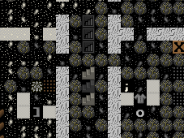
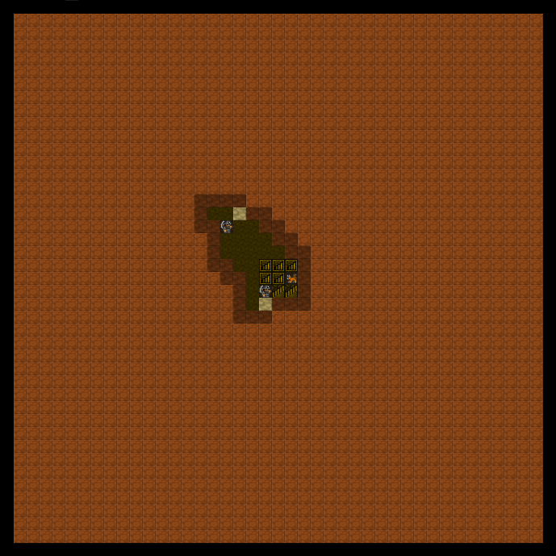
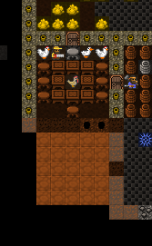
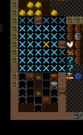
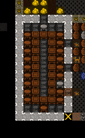
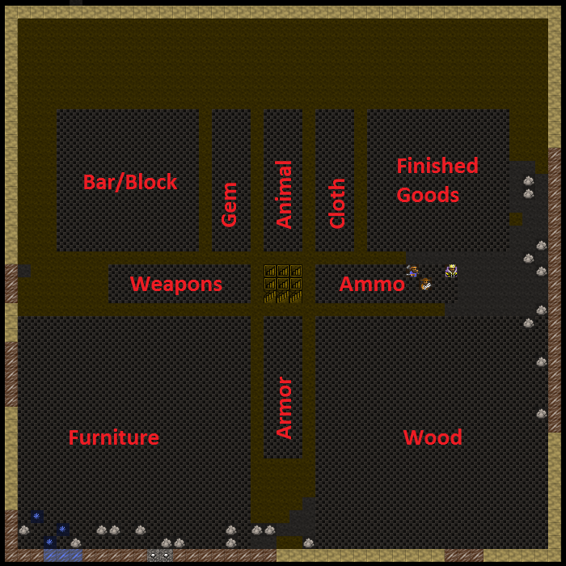
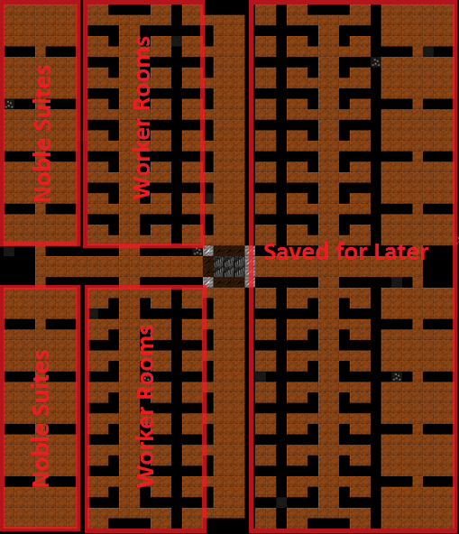

5. An Industrial Revolution¶
You have come a long way, young jedi! Your dwarf herding skills are strong! You now know the basics of building, production, trading and managing your dwarves.
This is probably a good time to go read the tutorial on trading - it ties in pretty well with a large industrial base. Tutorials are designed be skippable though, so if the thought of heavy industry excites you, we can dive right in!
5.1. More Production!¶
Lets start with some new workshops you should get to grips with. I won’t list the keys you need to use for every task, you should be able to remember the basic stuff from earlier lessons, so lets just get building these workshops around our four big production rooms:
- Mechanic’s Workshop
- Leather Works
- Farmer’s Workshop
- Kitchen
- Butchers
- Metalsmith’s Forge
In addition, go to the Furnaces menu (from b and then e for
Furnaces) and build:
- Wood Furnace
- Smelter
While those places get built lets look at expanding a bit. In the
middle of our four room area we have three stairs going down. Right now
they go nowhere, so lets go down about 5 levels. Remember, d and then
i for Up/Down Stairs, set to the level below, will get that
construction going.
We also have room to expand between our production floor and our
entrance, so lets go up a level and put some storage there. I suggest
the easiest way to do this will be to b, build a C
constructed up-stair. So chose the space I highlight
below, and then follow along!
Find the spot in the picture above, just below those down stairs.
- Hit
b - Hit
C(Shift-c) - Hit
ufor Up Stair. - Chose some stone.
- Repeat to set three up stairs to be built.
Once the job is done you’ll have some stairs like this:
Now we want to connect this level to the one above. If you go up a level you won’t see anything but dirt, but we know the stairs are leading up to this level, so it’s a matter of constructing some, right? WRONG! We want to designate some stairs, because our miners will carve out some matching stairs! We only use Construct when we’ve got an empty space to deal with.
One challenge you’ll face is working out where on the floor above the spot is you need to dig out. So try this technique:
- Hit
d - Hit
ifor Up/Down Stair (we want a series of stairs almost back up to the surface). - Put your X over the top stair in the line, like the screenshot
- Now go up a level and at the above level, designate three stairs in a row (ie, hit enter, then hit down-arrow a couple of times, and then hit enter), the above level should look like this:
You’ll note I wasn’t quick enough when I took this picture and two of my three stairs are already dug out. Good dwarves!
With the new stairs dug out (providing easy access to all the space we’re going to create for our production dwarves) lets make a massive space for them to stockpile goods. Here’s how much I dug out:
In case you’re wondering, that’s about a 40×40 box with our first stairs at the bottom. And one nice thing about digging in dirt (which this layer is), is that it doesn’t leave any messy rock around to clutter up our nice stockpiles!
While that’s completing, lets start an important job, making our dining room awesome! You see, dwarves love to spend time in an attractive meeting hall. Right now mine is packed with loafers. They clearly need a bit more room! A bit of digging will sort that:
Once the room is expanded, fit doors and some more tables and chairs. Once that’s done you’ll need to do something important, and that’s resize the room. As you may remember we set the room up from one of the tables. But if you q over the dining room table now you’ll see it doesn’t fill the space:
The room will be more valuable and widely used if it’s set to be bigger, to fill this space. Lets do that now:
- Hit
qand move the X over the table which is setting the room up… - Hit
rfor Resize Room. - Using
=expand the room size till you fill the space:
- Hit
Enter
Job done! The room is resized and better. But we want to make it MUCH better because I noticed a dwarf with a red down arrow flashing and when I viewed his info it turned out he was pretty unimpressed with his surroundings. Lets get to impressing him!
How do we do that? Simple! We smooth the walls and then engrave them with fine carvings all about our fortress! To do this:
- Hit
d. - Hit
sfor Smooth Stone. - Select the entire dining room and walls using
Enter, move cursor,Enter.
The room will now look all flashy like this (until you back out of the menu, anyway):
Any dwarf with the Stone detailing labour on will now set about
smoothing the walls and floors. The next step, once the space is
smooth, is to designate the room to be engraved using d, e.
Engraved walls make dwarves happy and increase the value of your
fortress. You can even look at them by using k and hitting enter with
the engraving highlighted. Some walls have some quite amusing
engravings (randomly generated and based on the history of your dwarves
and your fortress), so it’s worth looking around and finding the good
ones. The better the quality of the engraving the more text there is to
read, so keep an eye out for the engravings with the metal-bars icon
next to them.
With the smoothing under way, lets get back to the piles. In that big space upstairs you can pretty much set up a space for everything it’s possible to make a pile for (except refuse, of course, which we want to be outside). So go do that now. Here’s how mine is laid out.
Pretty complete huh? Well, almost, I’m sort of tempted to make a stone pile and using custom settings have it as metal ores only. It would make things a bit tidier, but on the other hand probably doesn’t gain me that much efficiency right now. Be very careful with stone stockpiles, hauling stone can consume a heap of your dwarves’ time, which is a bit pointless.
5.2. Hotel Califortress!¶
We’ve got some new workshops set up, we’ve got some great storage, and we’ve dug down a few levels. Good stuff! Unfortunately, (or fortunately?) you’ve probably had a bunch of immigrants arrive over the course of the past couple of tutorials and they haven’t been assigned anywhere to live. We also don’t have any space dug out for the inevitable arrival of nobles, and these boys and girls are one set of dwarves that need hard work to keep happy!
Fortunately we’ve dug down a few levels and we have a lot of nice rock down there. So lets go take some time to lay out some great bedrooms for our dwarves. The majority of your rooms should be 2×2, but lets make some space for nobles too.
Nobles usually want two-to-four rooms. So lets make things easy and give them all four rooms of size 3×3 or so, that should be good enough. Here’s how I have planned out my bedroom level:
A couple of points. Firstly, the whole right side of my new bedroom level won’t be dug because it’s not connected to the stairs, etc. I’ll connect it up later once we’ve got the left side done. Second, my layout is pretty boring, go and check out some of the bedroom designs on the wiki. I love the fractal pattern! Very efficient! Finally, you’ll notice the big wide corridors for the main arterial routes. dwarves need space to move around, remember!
Also, remember that you will need a lot of new doors and beds for our beautiful hotel. While you’re at it, build a ton of tables and chairs and at least a half dozen coffers, cabinets, armor stands, weapon stands. You’ll find all those items under the masonry workshop menus. Oh, and lets connect up the southern most stairs (the first ones we built way back in tutorial 1 or 2) with this level as well. Construct down stairs from the workshop floor and then designate Up/Down stairs till we’re all connected up.
While that is being built (oh, we’re going to find some gems too, cool!) lets continue with-
5.3. Dwarves and their strange moods!¶
Oh dear! Something is going down in dwarf land!
Endok Oltarisos, Tanner, withdraws from society…
If you get a dwarf in a strange mood, find them using u, looking for
their name, and then c. You will see the dwarf flashing with a grey
exclamation mark (red is very bad, by the way). Follow this dwarf
closesly. This dwarf has got a strange mood and is off to claim a
workshop to start building some amazing object based on their whim and
fancy. We can’t control what they build, all we can do is hope they
build something cool and that they can find all the materials they want
for their fancy. If not, they go suicidal or homicidal. Oh dear! Lets
watch and see what happens. Of course, this event is random, so it
might not happen to you at this point in the game, but it will happen
sooner or later.
Right, my dwarf, Endok Oltarisos has rushed off to claim a leather
workshop. No surprise, he’s a tanner after all. Once he claims the
workshop you can q and see the status of the workshop, and if you
wait, it will scroll through what items the dwarf is looking for. Endok
is looking for stacked leather and skeletons.
I’m not sure if I’ve got any. I’ll find out pretty quickly though,
the dwarf will either run off and start fetching stuff, or sit in
the workshop, seemingly doing nothing…
Well, the leather isn’t a problem, I just bought a ton from a trader, and the bones, I think he’s grabbed some from the refuse pile. Thankfully, my worries about the dwarf not getting stuff are put to rest when I get this message:
Endok Oltarisos has begun a mysterious construction!
Endok has begun a mysterious construction! Great! Now we just wait and see what crazy object the dwarf produces. With luck it will be useful!
Endok Oltarisos, Tanner, has created Modonnokoi, a dog leather cap!
..or maybe not! Our dwarf has made a cap, a simple hat, out of dog leather! Damn! On the plus side though the dwarf has become a legendary tanner. If they gain skill from a mood it often leaves them Legendary, which is pretty neat. With legendary skill I could use Endok to make leather armour and it would be almost as good as metal armour.
Lets look at the item. If we hit l we get a list of artefacts. With
only one artefact there’s no list, so we can go straight in to hitting
v to :guilabel`View`. Behold! Triberiddle, the dog leather cap!
A nice hat depicting when one of the trade caravan guards shot a goblin. No one will wear it though, it’s an artifact, and only champions are important enough to grab artifacts from stockpiles.
We were lucky this time with our moody dwarf. He was able to get everything he needed to make his artifact. If he couldn’t find it he would go quite crazy in the workshop, or if a suitable workshop isn’t available, in his room. When you see the dwarf start to go crazy (flashing down arrows and not moving from their workshop are a good sign) it’s time to either assign the dwarf some war dogs (more on that later) or to construct some walls and wall them in to their workshop, or to lock the door on their quarters. At some point the dwarf will go beserk and either get attacked by nearby military dwarves or war dogs, or if locked inside, slowly starve to death.
If the crazy dwarf is ignored they will destroy stuff and attack dwarves, probably killing a couple before they are put down, so watch those moody stunties closely!
In the next chapter, we’ll cover traps - used to “mine” a kind of iron ore the community calls “goblinite”. See you then!